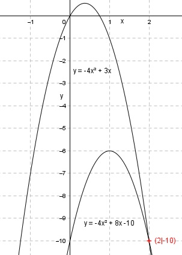

Aufgabe 71 An welchen Stellen x schneiden sich die beiden Parabeln y = -4x² + 8x - 10 und y = -4x² + 3x? Für die Schnittpunkte gilt: -4x2 + 8x – 10 = -4x2 + 3x |+4x2 8x – 10 = 3x |+10 8x = 3x + 10 |-3x 5x = 10 |:5 x = 2 y = -4 * 2² + 3 * 2 = -16 + 6 = -10 Schnittpunkt (2|-10) 